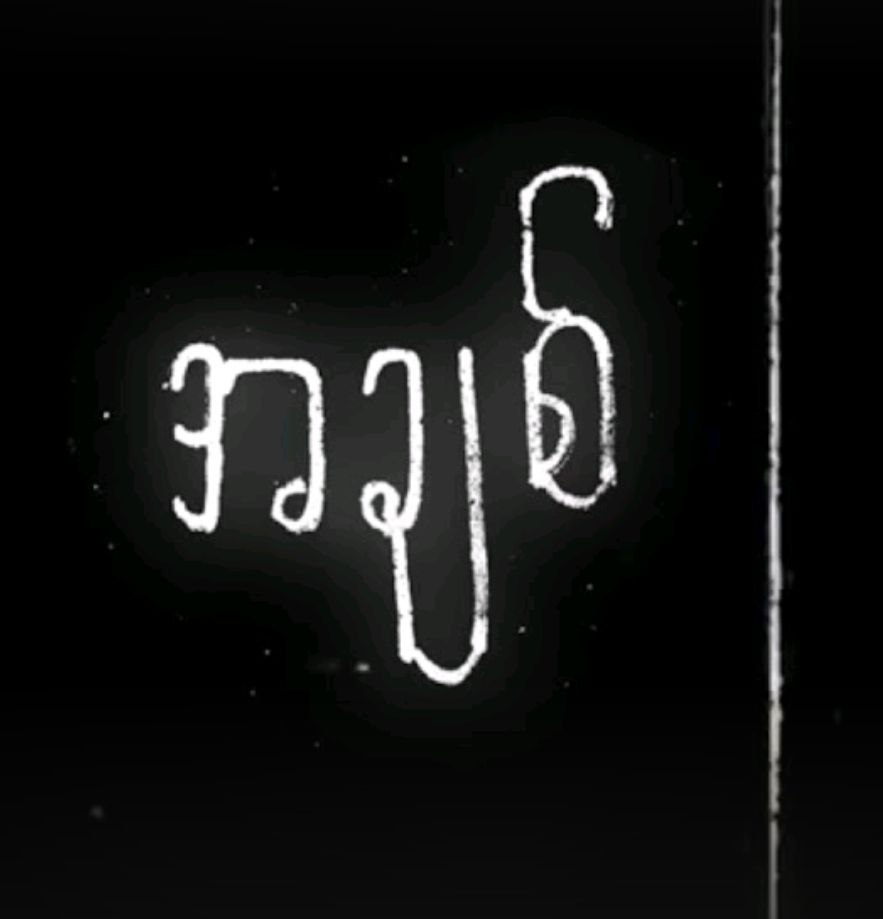

BG18
လူကိုပျော်ရွှင်စေတတ်တဲ့
ဒါမှမဟုတ် ဝမ်းနည်းစေတတ်တဲ့အရာ
အဲ့ဒီအရာကို အချစ်လို့သတ်မှတ်မလား
ဘယ်လိုလူတိုင်းနဲ့မှ မကင်းတဲ့
ချိုမြိန်နေမယ့် သောကလေးရယ်
ဘယ်ဘာသာစကားနဲ့မှ
ရှင်းပြဖွင့်ဟလို့ မပြည့်စုံခဲ့တယ်
သူ့အတွက်ကြောင့် ဒူးထောက်ခဲ့ဖူးသလို
လောကကြီးကို အရွဲ့တိုက်ဖို့ရူး
ချစ်နေရရင် စက္ကန့်တိုင်းဟာ လှနေဦးမှာမို့
ကိုယ့်ရဲ့အနားမှာ မင်းရှိပေးပါဦး
ဘာတွေဝမ်းသာ ဘာကြောင့်ဝမ်းနည်း
စိတ်တွေ ပင်ပန်းတယ်
ရယ်သံများစွာကြား အမာရွတ်တွေ
ဖွက်ထားရတဲ့ နေ့တွေနဲ့
အဖြစ်ဟာ သိပ်ဆန်းကြယ်
ငါရုန်းထွက်လေ ပိုပြီးနစ်ဝင်ခဲ့
အချစ်တဲ့ (ရေး)
ဒါကို တိုက်ဆိုင်မှုတဲ့လား (Aww)
စကြာဝဠာတခုလုံးစာ ချစ်ခဲ့ကြတာ
အဲ့တာ တိုက်ဆိုင်မှုမဟုတ်ဘူး
ငါတို့ နှစ်ယောက်လုံးရဲ့ ရွေးချယ်မူ
ဘယ်သူတွေ ထင်မှာလဲ
ဒီလိုမျိုး ဇာတ်သိမ်းသွားလိမ့်မယ်လို့ မတွေးခဲ့ဘူး (ရေး)
ချစ်သူမျက်နှာနဲ့ တစ်ကမ္ဘာလုံးကိုကျောခိုင်းပြီး
အစဆုံး ငါပြောပြမယ်
မင်းမကြိုက်တဲ့ ဆေးလိပ်တွေငါဖြတ်ခဲ့
အသက်ထက် ပိုမြတ်နိုးလို့
ခန္ဓာထက်စိတ်ကို ပိုမက်တယ်
အချစ်ကို အမြဲတမ်းကိုးကွယ်သူတစ်ယောက်ရဲ့
Trauma တွေ က အဆက်မပြတ်ပဲ
Yeah စိတ်ဓာတ်တွေကျနေချိန် ငါ့ဘေးမှာ အားပေးကူမဲ့သူ
မင်းတယောက်သာ မရှိတော့ရင်
ငါဘာဆက်လုပ်ရမလဲ ငါမသိတော့ဘူး
ပစ္စုပ္ပန်ဖြစ်နေတဲ့ အရာများကို
ကျေနပ်စွာ မင်းလက်ခံရဲ့လား
မင်းစိတ်နဲ့ အသက်ရှင်နေတဲ့ငါက
အသက်ရှူရပ်တန့်ပြီး ငါကျန်ခဲ့မှာ
အချစ်ဆိုတဲ့အရာ
ဘယ်သူကမှားပြီး ဘယ်သူကမှန်လဲ
အဖြေရှာလို့မရအောင် ငါဟာဉာဏ်နည်း
မင်းစိတ်ကျေနပ်အောင် အမြဲတမ်းအမှန်ပဲထားပြီး
ငါ့ရင်ဘတ်ကို အတောင့်လိုက်ကန်ထည့်
မင်းလိုချင်နေတဲ့ မင်းရဲ့အနားမှာနေပြီး ဖြည့်ဆည်းပေးချင်ခဲ့
အတတ်နိုင်ဆုံး ပျော်အောင်ထားပြီး
မင်းဘေးမှာ အသင့်ရှိနေခဲ့
ဘာတွေဝမ်းသာ ဘာကြောင့်ဝမ်းနည်း
စိတ်တွေ ပင်ပန်းတယ်
ရယ်သံများစွာကြား အမာရွတ်တွေ
ဖွက်ထားရတဲ့ နေ့တွေနဲ့
အဖြစ်ဟာ သိပ်ဆန်းကြယ်
ငါရုန်းထွက်လေ ပိုပြီးနစ်ဝင်ခဲ့
အချစ်တဲ့ (ရေး)
ခံစားချက်နဲ့ အသက်ရှင်
မင်းစိတ်နဲ့ အသက်ရှင်ခဲ့
မျက်ဝန်းများက ပြောတဲ့စကား
မမျှော်လင့်ထားတဲ့အချစ်နဲ့ ရင်ခုန်ရင်း
အတူလျှောက်ခဲ့တဲ့ လမ်းလေး
အေးစက်စက် ညနက်တစ်ချို့မှာ
အထီးကျန်ခြင်းတွေ ထားရစ်လို့
စုတ်ပြတ်သတ်အောင် လုပ်လို့သွားလည်း
မုန်းလို့မရတဲ့ အဖြစ်မျိုး
ဒါအချစ်လား ဝဋ်ကြွေးလား
တစ်ရက်လေးမှ ထွက်ပြေးမရ
ပျော်ရွှင်ခြင်းနဲ့ နာကျင်ခြင်းကို
တစ်လှည့်စီ သူသင်ပေးသွား
အတုအယောင်များကြားမှာ ငါရှင်သန်ရင်း
ဘယ်အရာကို အချစ်လို့ငါ သတ်မှတ်မလဲ (ရေး ရေး)
ရင်ခုန်သံအမှားများနဲ့ပြုံးမိတဲ့ နေ့ရက်တွေကတလွဲ
အဆိပ်အတောက်များအပြည့်နဲ့ အချစ်ကိုစားသုံးရင်း
ဘယ်လိုမှ ရုန်းထွက်မရလို့
နေ့ရက်တိုင်းမှာ အသက်မဲ့ခဲ့
Oh no
Don't wanna love again
ဘာတွေဝမ်းသာ ဘာကြောင့်ဝမ်းနည်း
စိတ်တွေ ပင်ပန်းတယ်
ရယ်သံများစွာကြား အမာရွတ်တွေ
ဖွက်ထားရတဲ့ နေ့တွေနဲ့
အဖြစ်ဟာ သိပ်ဆန်းကြယ်
ငါရုန်းထွက်လေ ပိုပြီးနစ်ဝင်ခဲ့
အချစ်တဲ့ (ရေး)